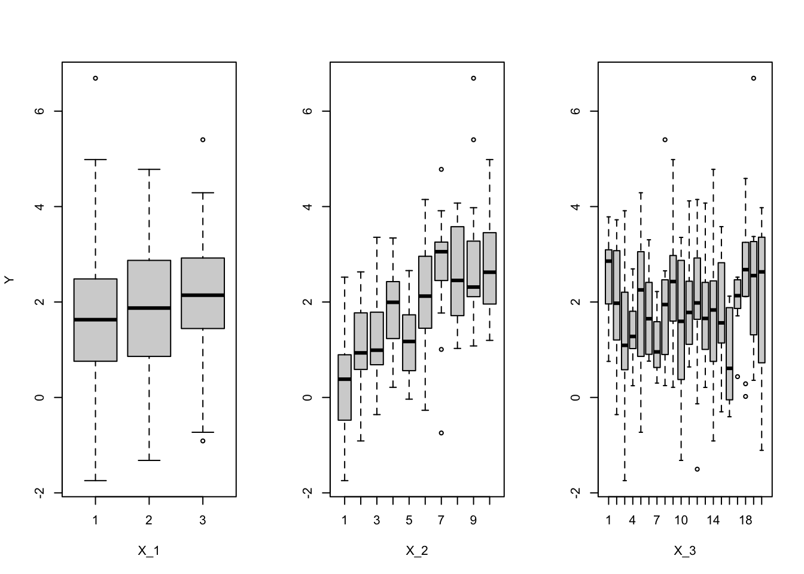

Code
# Install packages for later use
library(ggplot2)
library(dplyr)
library(tidyr)
# Set a seed for reproducibility
set.seed(17)# Install packages for later use
library(ggplot2)
library(dplyr)
library(tidyr)
# Set a seed for reproducibility
set.seed(17)Here’s the data generation model from the assignment. It is a standard linear regression model with 3 categorical variables, \(X_1\), \(X_2\), and \(X_3\). We will generate datasets with \(N=200\) observations according to the following specifications:
| Variable | Levels |
|---|---|
| \(X_1\) | 3 |
| \(X_2\) | 10 |
| \(X_3\) | 20 |
\[Y = 0.5\,I_{(X_2 \in \{1\})} + 1\,I_{(X_2 \in \{2,3\})} +1.75\,I_{(X_2 \in \{4,5,6\})}+2.75\,I_{(X_2 \in \{7,8,9,10\})} + \epsilon\qquad \epsilon \sim N(0,1)\]
The assignment provides no specification for how the samples of each variable should be generated, so we will use a uniform sample.
Below, we’ll define a function for generating data, because we’ll want to use that later in our simulation steps.
# Generate data for 'n' observations
generate_data <- function(n = 200){
# define number of observations to be 200
n_obs <- n
# generate categorical variables for dataset
# add prob = c(p, p, p) to adjust group representation
X_1 <- factor(sample(1:3, n_obs, replace = TRUE), levels = 1:3)
X_2 <- factor(sample(1:10, n_obs, replace = TRUE), levels = 1:10)
X_3 <- factor(sample(1:20, n_obs, replace= TRUE), levels = 1:20)
# generate outcome variable based on X_2 values plus random noise
Y <- ifelse(X_2 == 1, 0.5,
ifelse(X_2 %in% 2:3, 1,
ifelse(X_2 %in% 4:6, 1.75, 2.75))) + rnorm(n_obs)
# combine data to one data frame and return
data.frame(Y, X_1, X_2, X_3)
}
sample_data <- generate_data()
head(sample_data) Y X_1 X_2 X_3
1 4.5895458 2 10 18
2 4.9853610 1 10 9
3 0.2124728 2 4 9
4 1.3505597 3 9 15
5 2.4881088 3 6 17
6 3.2758930 3 9 10Let’s do some EDA to check out how our data looks now.
yl <- range(sample_data$Y)
par(mfrow = c(1,3))
plot(Y ~ X_1, data = sample_data, xlab = 'X_1', ylab = 'Y', ylim = yl)
plot(Y ~ X_2, data = sample_data, xlab = 'X_2', ylab = '', ylim = yl)
plot(Y ~ X_3, data = sample_data, xlab = 'X_3', ylab = '', ylim = yl)
What happens if we just threw the linear model at this?
lm1 <- lm(Y ~ X_1 + X_2 + X_3, data = sample_data)
summary(lm1)
Call:
lm(formula = Y ~ X_1 + X_2 + X_3, data = sample_data)
Residuals:
Min 1Q Median 3Q Max
-2.7822 -0.6737 0.0036 0.6083 3.4986
Coefficients:
Estimate Std. Error t value Pr(>|t|)
(Intercept) 0.75166 0.53438 1.407 0.16139
X_12 -0.01255 0.19362 -0.065 0.94839
X_13 0.09149 0.20462 0.447 0.65538
X_22 1.10301 0.37452 2.945 0.00368 **
X_23 0.96406 0.34006 2.835 0.00514 **
X_24 1.67093 0.33609 4.972 1.62e-06 ***
X_25 1.04055 0.39523 2.633 0.00925 **
X_26 1.86502 0.32975 5.656 6.49e-08 ***
X_27 2.56569 0.35954 7.136 2.70e-11 ***
X_28 2.39645 0.36415 6.581 5.63e-10 ***
X_29 2.42682 0.33941 7.150 2.50e-11 ***
X_210 2.68752 0.30612 8.779 1.76e-15 ***
X_32 -0.62704 0.58918 -1.064 0.28873
X_33 -1.27946 0.61391 -2.084 0.03865 *
X_34 -1.24123 0.63644 -1.950 0.05280 .
X_35 -0.30462 0.57847 -0.527 0.59916
X_36 -0.72870 0.62851 -1.159 0.24793
X_37 -1.10698 0.79982 -1.384 0.16817
X_38 -0.51549 0.60988 -0.845 0.39918
X_39 -0.21580 0.57840 -0.373 0.70954
X_310 -0.60852 0.62415 -0.975 0.33098
X_311 -0.58679 0.60155 -0.975 0.33072
X_312 -0.62146 0.55460 -1.121 0.26406
X_313 -1.07544 0.58280 -1.845 0.06675 .
X_314 -0.43524 0.59036 -0.737 0.46199
X_315 -0.54525 0.59750 -0.913 0.36278
X_316 -1.22612 0.60735 -2.019 0.04509 *
X_317 -0.58628 0.59091 -0.992 0.32253
X_318 -0.35038 0.60611 -0.578 0.56398
X_319 0.01271 0.61739 0.021 0.98360
X_320 -0.17930 0.60483 -0.296 0.76726
---
Signif. codes: 0 '***' 0.001 '**' 0.01 '*' 0.05 '.' 0.1 ' ' 1
Residual standard error: 1.059 on 169 degrees of freedom
Multiple R-squared: 0.4826, Adjusted R-squared: 0.3907
F-statistic: 5.254 on 30 and 169 DF, p-value: 1.044e-12We got a result! But what does that mean? What did we actually provide it? Is this useful to us at all?
What we expected to provide was some version of
\[E[y|X] = B1*X1 + B2*X2 + B3*X3\], but what really happened was categorical variables rather than continuous variables.
This was an additive model with no interaction terms. Under the hood, R made a design matrix \(X\). Check out what it looks like below:
model.matrix(Y ~ X_1 + X_2 + X_3, data = sample_data) |> head() (Intercept) X_12 X_13 X_22 X_23 X_24 X_25 X_26 X_27 X_28 X_29 X_210 X_32 X_33
1 1 1 0 0 0 0 0 0 0 0 0 1 0 0
2 1 0 0 0 0 0 0 0 0 0 0 1 0 0
3 1 1 0 0 0 1 0 0 0 0 0 0 0 0
4 1 0 1 0 0 0 0 0 0 0 1 0 0 0
5 1 0 1 0 0 0 0 1 0 0 0 0 0 0
6 1 0 1 0 0 0 0 0 0 0 1 0 0 0
X_34 X_35 X_36 X_37 X_38 X_39 X_310 X_311 X_312 X_313 X_314 X_315 X_316 X_317
1 0 0 0 0 0 0 0 0 0 0 0 0 0 0
2 0 0 0 0 0 1 0 0 0 0 0 0 0 0
3 0 0 0 0 0 1 0 0 0 0 0 0 0 0
4 0 0 0 0 0 0 0 0 0 0 0 1 0 0
5 0 0 0 0 0 0 0 0 0 0 0 0 0 1
6 0 0 0 0 0 0 1 0 0 0 0 0 0 0
X_318 X_319 X_320
1 1 0 0
2 0 0 0
3 0 0 0
4 0 0 0
5 0 0 0
6 0 0 0You can see that for each group, R dropped the first level to serve as the reference category. The intercept represents the predicted mean of Y when all three variables are at there respective reference levels simultaneously. This is often referred to as the reference cell parameterization. So each parameter we see in the output is actually a difference from the reference level.
If we’d prefer to use a cell means, unweighted average deviaiton, or weighted average deviaiton, then we could adjust our function call to use one of these instead.
We want to be deliberate in our selection of which parameterization to use as we proceed forward.